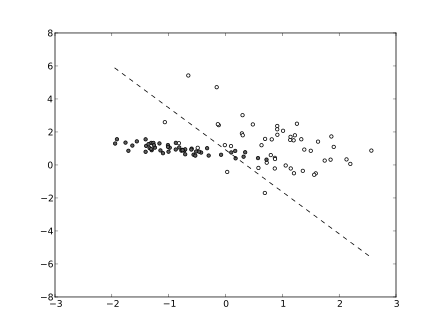
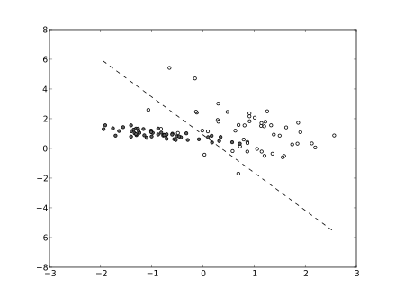

+
+
+

+
+
+
+

+
The strategy almost completely avoids relying on any other medical research.
That means it avoids links with the 1/4 trillion dollars is spent globally on medical research each year, which maybe amounts to 20 trillion or more if it assumed this has been relatively constant over the past 100 years.
An autonomous robotic system explores the space of animal biological systems through the use of animal models of mice and pigs. A feedback loop, the health of studied specimens, shapes the actions of the system. The system can be thought as an implementation of a reinforcement learning system.
The parts of the system, described in terms of reinforcement learning
- a set of environment states
The actual real world biological states of the specimens at any particular moment time.
- a set of actions
The actions the robots in the system can take. Robotics arm manipulate the specimens, guided by cameras and other sensors
- rules of transitioning between states
The real world effects of the robotic manipulation, as well as passage of time.
- rules that determine the scalar immediate reward of a transition
Through the use of sensors the health of the specimens is monitored and from this a calculation determines the score of the specimens health.
- rules that describe what the agent observes
These are the measurements taken by sensors in the system (such as video cameras or chemical sensors of various kinds).
Implementation
- Code data collection and processing software
Conventional software architecture using standard technology - LAMP and NoSQL and machine learning.
- Code sensors
Video cameras paired with image processing using deep learning.
- Select off-the-shelf electro-mechanical hardware
Industrial robot arms, quadcopters, automated material handling such as kiva, and surgical robots,
- Set up system at a suitable location.
Further Information
You can subscribe by sending a message to aging-reversal+subscribe@googlegroups.com
(You can easily unsubscribe by sending a message to aging-reversal+subscribe@googlegroups.com as well).